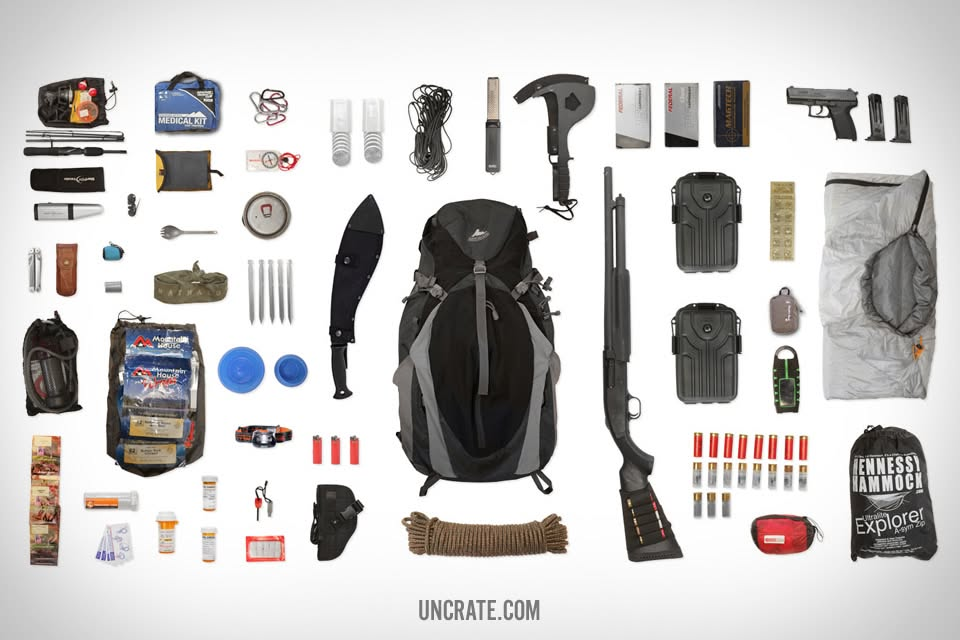
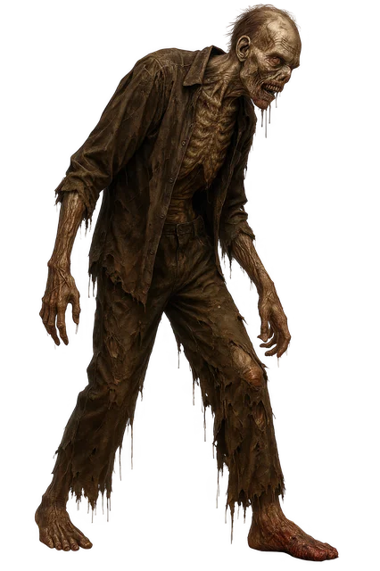

Non-Ballistic Weapon
Gunfire carries for miles and pulls every zombie toward you. A non-ballistic weapon works quietly and never needs ammunition.
Stay quiet. Stay together. Stay alive.
This manual is issued to all survivors in Springfield, Missouri. The outbreak has reached the Ozarks, and the city is no longer safe. Read every section, follow the rules, and keep this guide with you at all times.

Gunfire carries for miles and pulls every zombie toward you. A non-ballistic weapon works quietly and never needs ammunition.
A knife is a tool first and a weapon second. Use it to cut rope, open supplies, and defend yourself at close range.
Clean water and food keep you moving. Pack enough to last until you reach the safe zone.

Bunker 417 is a reinforced shelter below Springfield with one locked entrance and room for a small group. Thick walls block sound, so the infected cannot hear you inside. A tunnel at the back may lead deeper underground, giving survivors an escape route if the entrance is breached. Scouts will check the tunnel before anyone relies on it.
You can add one item to the survival kit. Which would you choose?